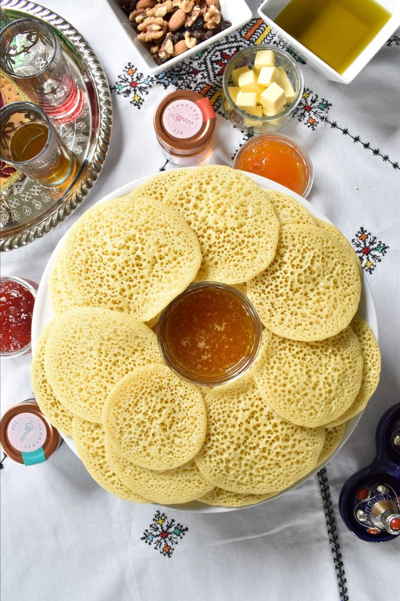

Beghrir (Moroccan Pancakes)

Description
Moroccan pancakes are served with honey-butter sauce. Best during Ramadan
for breaking the fast or pre-dawn, but certainly great anytime.
Ingredients
- 250g of fine semolina flour
- 4 tablespoons plain flour (40g)
- 2 tablespoons caster sugar
- 1 heaped teaspoon active dry yeast
- ½ teaspoon salt
- 500ml warm water
- 2 teaspoons baking powder
Steps
-
In a blender insert the semolina, flour, sugar, yeast and salt. Add the
warm water and blend until there are no lumps and the batter is smooth.
If you don't have a blender place all the ingredients in a large bowl
and use an electric whisk instead of a blender
-
Add the baking powder and blend again for a few seconds. Leave the
batter for 30 minutes to allow the yeast to proof and blend again for a
few seconds.
-
Grease a non-stick pan and place it over medium high heat. Wait for the
pan to be very hot to start baking the pancakes, otherwise you won't get
many holes on your pancakes.
-
Place a small amount of batter (as you would for any pancake) and leave
the pancake until it dries out. As soon as you place the batter on the
pan, the batter should start bubbling and drying out. Once the baghrir
is no longer wet (it takes about a minute), it will mean that it is
cooked. Baghrir are cooked only on one side. Never flip them while
baking them as you will loose the holes.
-
Repeat until you've used all the batter.
Don't pile up your Moroccan pancakes while they are still hot, as they will stick to each other. If you want to pile them when they
are hot, separate them with a tissue.
-
Serve hot and top your baghrirs with anything yummy, pretty much like
with any other pancake!